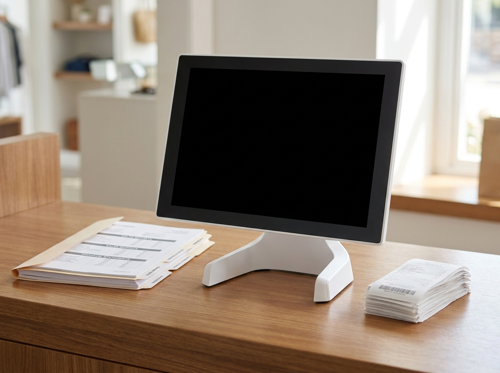

소상공인 정책자금과 지원금은 크게 두 갈래로 나뉩니다. 하나는 갚아야 하는 정책자금 대출(융자), 다른 하나는 갚지 않아도 되는 지원사업 보조금(교육·컨설팅·마케팅·시설개선 등)입니다. 이 둘을 구분하는 것이 신청의 출발점입니다. 그리고 가장 중요한 원칙 하나 — 사업명·자격·한도·금리는 해마다 바뀌므로, 최종 확인은 반드시 공식 공고에서 해야 합니다. 이 글은 신청 전에 사장님이 스스로 점검할 수 있는 흐름과 서류, 그리고 사칭 사기를 피하는 법을 정리했습니다.
이름이 비슷해 헷갈리지만 성격이 완전히 다릅니다. 신청 전에 내가 필요한 것이 어느 쪽인지부터 정해야 합니다.
핵심은 이것입니다. 대출은 반드시 갚아야 하는 돈이라는 점. 금리가 낮다고 필요 이상으로 받으면 매달 상환 부담이 매출을 압박할 수 있습니다.
사업마다 세부 절차는 다르지만, 큰 틀은 비슷합니다. 순서를 알면 준비가 훨씬 수월합니다.
지원사업은 예산이 소진되면 조기 마감되는 경우가 흔합니다. 공고가 뜨면 서둘러 확인하는 습관이 필요합니다.

서류가 준비돼 있으면 접수 마감에 쫓기지 않습니다. 사업별로 요구 서류가 다르지만, 공통으로 자주 쓰이는 것들은 다음과 같습니다.
여기서 자주 발목을 잡는 것이 매출 증빙입니다. 심사에서는 매장이 실제로 얼마나, 어떻게 운영되는지를 봅니다. 평소 결제·매출 데이터가 정리돼 있으면 증빙 준비가 한결 수월합니다. 누리포스 같은 포스로 일·월 매출과 결제 내역이 자동 집계돼 있으면, 필요한 기간의 매출 자료를 뽑아 정리하기가 쉬워집니다. (다만 세무·정책자금 심사 자체는 세무사·해당 기관의 영역이며, 포스는 어디까지나 매출 자료 정리를 돕는 도구입니다.)
무작정 신청하기 전에 두 가지를 냉정하게 따져봐야 합니다.
첫째, 자격 요건. 업종 제한, 사업 영위 기간, 매출 상한, 세금 체납 여부, 기존 정책자금 잔액 등 조건이 촘촘합니다. 요건에 맞지 않으면 시간만 소모됩니다.
둘째, 상환 부담(대출의 경우). 낮은 금리라도 원리금은 매달 나갑니다. 대출을 받기 전 월 상환액이 우리 매장 현금흐름에서 감당 가능한 수준인지 계산해야 합니다. "지금 받을 수 있는가"보다 "갚아 나갈 수 있는가"가 먼저입니다.
두 제도의 차이를 한눈에 정리하면 다음과 같습니다.
| 구분 | 정책자금 대출(융자) | 지원사업 보조금 |
|---|---|---|
| 성격 | 낮은 금리로 빌리는 자금 | 비용 일부 지원 |
| 상환 의무 | 있음(원금+이자) | 없거나 자기부담금만 |
| 주요 용도 | 예: 운전자금·시설자금 등(사업별 상이) | 교육·컨설팅·마케팅·기기·시설개선 등 |
| 핵심 점검 | 상환 능력·금리·한도 | 자격 요건·예산 소진 여부 |
| 확인처 | 공식 공고에서 최신 확인 | 공식 공고에서 최신 확인 |
※ 위 표는 큰 갈래를 이해하기 위한 정리입니다. 구체적인 사업명·금액·자격·금리는 반드시 공식 공고에서 확인하세요.
정책자금 공고 시기가 되면 이를 사칭한 사기 문자·전화가 늘어납니다. 아래 신호가 보이면 의심하세요.
의심되면 통화를 끊고, 소상공인시장진흥공단·기업마당·중소벤처기업부 등 공식 채널의 대표번호로 직접 확인하세요. 이상 거래가 의심되면 금융감독원·경찰 등 관계기관에 문의할 수 있습니다.
Q1. 정책자금 대출과 지원금은 같은 건가요?
아닙니다. 대출은 갚아야 하는 융자이고, 지원금(보조금)은 비용 일부를 지원받는 것으로 성격이 다릅니다. 필요에 맞는 쪽을 골라 공식 공고에서 조건을 확인하세요.
Q2. 매출이 적어도 신청할 수 있나요?
사업마다 자격 요건이 다릅니다. 매출 규모가 조건이 되는 경우도, 오히려 소규모를 대상으로 하는 경우도 있습니다. 단정하지 말고 해당 사업 공고의 자격 기준을 확인해야 합니다.
Q3. 어디서 최신 정보를 봐야 하나요?
소상공인시장진흥공단(정책자금), 기업마당(중소벤처기업부 기업지원 정보 포털), 중소벤처기업부 등 공식 공고가 기준입니다. 사업명·자격·한도·금리는 자주 바뀌므로 항상 최신 공고로 확인하세요. 특히 지원사업은 예산 소진 시 조기 마감되므로, 관심 사업은 공고 시점을 미리 알림 설정해 두는 것이 안전합니다.
Q4. 누리네트웍스가 정책자금 신청을 대행해 주나요?
아닙니다. 누리네트웍스(누리포스)는 결제·포스 전문 회사로, 정책자금·세무 대행은 하지 않습니다. 다만 심사에 필요한 매출 자료를 포스로 정리하는 부분은 도움을 드릴 수 있습니다.
정책자금과 지원금은 기관의 영역이지만, 매출 자료를 평소 깔끔하게 정리해 두는 것은 사장님이 미리 할 수 있는 준비입니다. 누리네트웍스는 14년간 3만 매장에 포스·단말기·키오스크·테이블오더를 설치해 온 결제 전문 기업으로, 서울 본사에서 수도권(서울·인천·경기)까지 자사 엔지니어가 직접 설치합니다. 정품 신제품과 거품 뺀 직접 공급가로 상담해 드립니다.
매출 데이터부터 매장 결제 환경까지, 부담 없이 문의하세요.